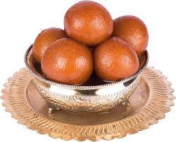

üç© Pantua

Ingredients
- 1 cup chhena (fresh paneer)
- 1/4 cup all-purpose flour
- 1/4 tsp baking soda
- 1/4 tsp cardamom powder
- 1/2 cup sugar
- 1 cup water
- Oil for deep frying
- 1 tsp rose water (optional)
Instructions
- In a mixing bowl, knead the chhena until smooth. Add flour, baking soda, and cardamom powder, and knead again to form a smooth dough.
- Divide the dough into small balls, making them smooth and round.
- Heat oil in a deep pan over medium heat for frying.
- Fry the dough balls until they turn golden brown and puff up.
- Meanwhile, prepare sugar syrup by boiling water and sugar in a pan until the sugar dissolves completely. Add rose water to the syrup if desired.
- Once the pantuas are fried, drop them into the warm sugar syrup and let them soak for a few minutes.
- Remove from syrup and serve them warm or chilled.
Serve With
- Enjoy as a delicious Bengali dessert!
üí° Tip: You can also garnish with cardamom seeds for extra flavor.